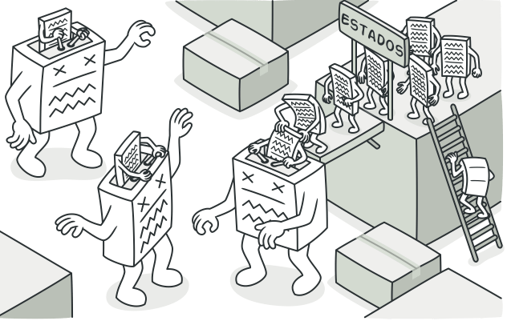
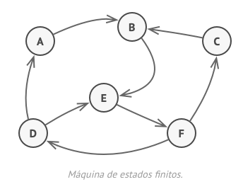

El patrón State es un patrón de diseño estructural que permite a un objeto cambiar su comportamiento en función de su estado interno.
El patrón State se utiliza para modelar sistemas que tienen múltiples estados, cada uno con su propio conjunto de comportamiento.
Estructura
El patrón State tiene la siguiente estructura:
- Context: La clase Contexto representa el objeto que cambia su comportamiento en función de su estado interno.
- State: La clase Estado representa un estado específico del objeto Contexto.
- ConcreteState: Las clases ConcreteState implementan la interfaz Estado para proporcionar el comportamiento específico para cada estado.
- El patrón State está estrechamente relacionado con el concepto de la Máquina de estados finitos 
Ejemplo
Consideremos un sistema de máquinas expendedoras de refrescos. La máquina expendedora puede estar en uno de los siguientes estados:
- Vacío: La máquina expendedora no tiene ningún refresco.
- Disponible: La máquina expendedora tiene refrescos.
- Vendido: La máquina expendedora ha vendido un refresco.
El patrón State se puede utilizar para modelar este sistema de la siguiente manera:
- Context: La clase MáquinaExpendedora representa la máquina expendedora.
- State: La interfaz Estado representa un estado de la máquina expendedora.
- ConcreteState: Las clases ConcreteState implementan la interfaz Estado para proporcionar el comportamiento específico para cada estado.
El código siguiente muestra una implementación del patrón State para el sistema de máquinas expendedoras:
class MáquinaExpendedora
{
private State $estado;
public function __construct(State $estado)
{
$this->estado = $estado;
}
public function venderRefresco()
{
$this->estado->venderRefresco();
}
}
// State
interface State
{
public function venderRefresco();
}
// ConcreteState
class Vacio implements State
{
public function venderRefresco()
{
echo "La máquina expendedora está vacía.";
}
}
class Disponible implements State
{
public function venderRefresco()
{
echo "Se ha vendido un refresco.";
$this->estado = new Vacio();
}
}
// Ejemplo de uso
$maquinaExpendedora = new MáquinaExpendedora(new Disponible());
$maquinaExpendedora->venderRefresco();
// Salida:
// Se ha vendido un refresco.
Ventajas
- El patrón State hace que el código sea más legible y fácil de mantener.
- El patrón State facilita la adición de nuevos estados y su extensión.